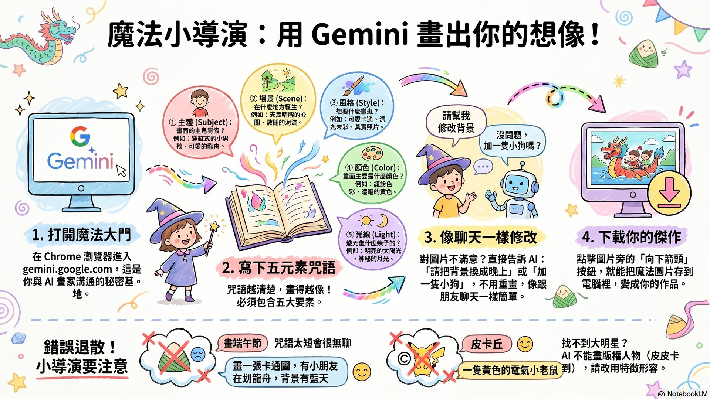
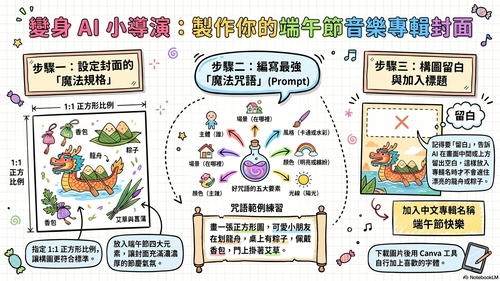
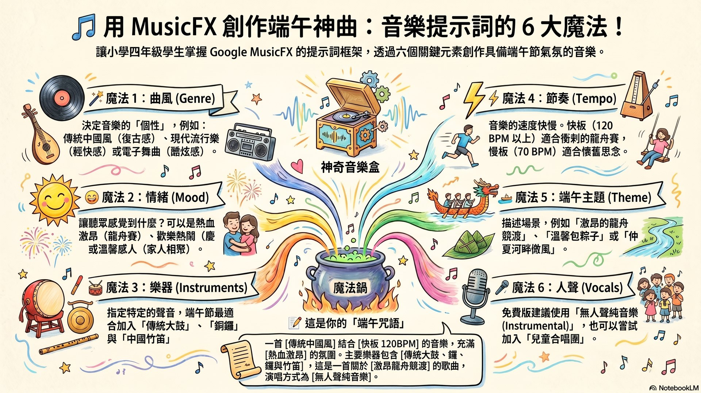

🥢 從一張圖，到一首歌！
這堂課我們要當「端午 AI 創作家」：先用免費的 Gemini 寫魔法咒語生成圖片，做出一張有龍舟、粽子、香包、艾草的音樂專輯封面；完成封面後，再進階用 MusicFX 音樂提示詞生成器，創作一首屬於你的端午節主題曲！
🖼️ 建立圖像
💿 專輯封面
🎵 創作音樂
🧧 端午文化
老師上課投影用 ⮕
🎬 進入演講簡報模式
14 張端午節慶風投影片 · 全螢幕投影 · 鍵盤翻頁 · 純離線可用
🪄學會寫咒語：用主體＋場景＋風格＋顏色＋光線，寫出好提示詞。
💿設計封面：做出 1:1 正方形端午專輯封面，加上中文標題。
🎶生成音樂：用 6 大元素組合音樂提示詞，創作端午歌曲。
🛡️安全素養：認識 AI 版權、SynthID、雄黃酒不能喝。
STAGE 1
🧧 端午小百科 × AI 是什麼？
先認識端午節，再認識我們的 AI 好幫手
📖 端午節的故事與習俗
- 由來：戰國時代愛國詩人屈原跳進汨羅江，村民划船找他、把米飯用竹葉包起來丟進江裡餵魚蝦——這就是划龍舟和吃粽子的由來。
- 習俗活動：划龍舟（敲鑼打鼓加油）、立蛋（靠重心和摩擦力）、掛艾草菖蒲（驅蚊淨化空氣）、配香包（天然中藥草防蚊）。
- 應景食物：粽子！有北部粽 vs 南部粽、鹹粽 vs 甜粽，口味五花八門。
🤖 AI 是什麼？「提示詞」又是什麼？
- AI 生成圖片：電腦裡住了一位「會魔法的超強畫家」，你打字它就把想像變成圖片。
- 提示詞（prompt）＝魔法咒語：你給 AI 的指令，越清楚畫得越像你要的。
- AI 生成音樂：用文字描述風格、心情、樂器，AI 就把旋律節奏「寫」出來。
🐉 記住：AI 就像聰明但偶爾迷糊的小幫手，你才是小導演！指令給得越清楚，作品就越棒。
教師提示：本關建立「端午文化」與「AI 即工具、人是主導者」的概念。可先讓學生分享自己過端午的經驗（吃什麼粽、有沒有看過划龍舟），再帶入屈原故事。強調「勝不驕敗不餒」的龍舟精神。
STAGE 2
🖼️ 建立圖像：用 Gemini 畫端午
學會「好咒語五要素」，畫出心中的端午畫面
🪄 操作步驟
- 打開瀏覽器進入 gemini.google.com，用 Google 帳號登入（國小由老師帳號統一操作）。
- 寫提示詞像「當電影小導演」：不要只說「畫端午節」，要說清楚「畫一張可愛卡通圖，一個小男孩穿紅衣服在吃粽子，背景是天氣很好的公園」。
- 想修改不用重來，直接像聊天說「請把背景換成晚上」「多加一隻小狗」。
- 找到圖片旁的「下載」按鈕（向下箭頭），點一下存到電腦。
🌟 好咒語五要素：① 主體（主角是誰）② 場景（在哪裡）③ 風格（卡通/水彩/照片）④ 顏色 ⑤ 光線。

🪄 互動：圖像咒語組合器
選一選下面的選項，下面就會自動幫你組好一句 Gemini 圖片咒語，按「複製咒語」就能貼到 Gemini！
✓ 已複製！貼到 Gemini 吧
教師提示：用組合器示範「細節越多畫得越好」。可請學生先用組合器組一句，再自己加形容詞延伸。提醒：不可輸入真實歌手名或有版權卡通人物（皮卡丘→「黃色電氣小老鼠」）。
STAGE 3
💿 專輯封面設計師
把圖片變成正方形專輯封面，加上中文標題！
🎯 操作步驟
- 請 Gemini 畫 1:1 正方形的圖：咒語加上「請畫一張 1:1 正方形的圖片」。
- 加中文專輯名稱，兩種方法：① 讓 AI 寫——咒語最後加「請在圖片裡寫上中文『端午快樂』」；② 自己加——把圖下載後上傳 Canva 打上字。
- 構圖留白：若要自己加字，先告訴 AI「畫面上方留一些空白」，標題才不會擋住龍舟或粽子。
💡 好封面是歌的「臉」：要吸睛、能傳達歌的心情（快樂的歌用明亮活潑畫面），還要留白放標題。

💿 互動：專輯封面預覽器
選背景、加元素、打上專輯名稱，右邊立刻看到你的端午專輯封面長什麼樣子！
✓ 已複製！
🖼️ 這是「預覽小幫手」，幫你想像封面的樣子。真正漂亮的封面，記得用上面的咒語請 Gemini 幫你畫喔！
教師提示：強調「留白」設計概念——標題要放在乾淨的地方。可讓學生先用預覽器決定構圖，再去 Gemini 生成正式封面。延伸：用 Canva 加文字是「20% 人工修改」，能讓作品更像自己的。
STAGE 4
🎵 創作音樂：端午主題曲
用 6 大元素組合「強大音樂咒語」，馬上上手！
🎼 操作步驟（MusicFX）
- 網址列輸入 labs.google/fx，登入 Google 帳號，選「MusicFX」。
- 把下面組好的音樂咒語貼進去（咒語要包含：曲風＋情緒＋樂器＋節奏＋主題＋人聲）。
- 點「Generate（產生）」，等一下下，AI 一次給你兩首，播放挑最滿意的。
- 按「下載（Download）」存成 MP3（可選 30/50/70 秒）。
🎤 免費版小提醒：MusicFX 主要做「純樂器伴奏」，暫時不會唱中文歌詞。沒關係——讓 AI 當樂團，你和同學當主唱，配著節奏唱出自己寫的端午歌詞，更酷！

🎶 互動：端午音樂提示詞生成器
選一選 6 大魔法元素，下面自動組成一句強大的音樂咒語，按「複製咒語」貼到 MusicFX 就能生成端午歌！
🇹🇼 中文版（給你看懂）
🌎 英文版（貼這個 AI 最聽得懂！）
✓ 已複製！貼到 MusicFX
✓ 已複製！
教師提示：音樂提示詞建議用「英文版」貼給 MusicFX（labs.google/fx 對英文最準）。可帶「龍舟應援團」活動：用組合器做加油配樂，全班配節奏喊「一、二、一、二」。提醒人聲選「無人聲純音樂」。
素養專區
🛡️ AI 安全、版權與端午衛教
當個聰明又誠實的小創作家
🔐 AI 使用安全與版權
- 作品可以分享，但別說「100% 是我的版權」。Google 不會搶走你的作品，可以自由使用。
- SynthID 隱形浮水印：AI 會在圖片和音樂裡藏一個看不到、聽不到的記號，告訴大家「這是 AI 變的魔術」。
- 不可以叫 AI 模仿真實歌手的聲音，也不能畫有版權的卡通人物或商標（米老鼠、Nike）。AI 的安全保鑣會拒絕。
- 誠實的小創作者：分享時驕傲地說「這是我當小導演，指揮 AI 幫我做的！」
🍶 端午衛教：雄黃酒「絕對不能喝」！
- 古人因為農曆五月濕熱多病（毒月），相信喝雄黃酒能避邪——但那是舊時代的觀念。
- 雄黃的成分是硫化砷，加熱氧化會變成砒霜（劇毒）！喝了會砷中毒，傷神經和內臟。
- 真正健康的端午防疫：戴天然中藥草香包、掛艾草菖蒲、保持環境清潔多運動。
⚠️ 白蛇傳是神話故事，現實中雄黃酒不能喝！衛福部也提醒大家別喝。
教師提示：雄黃酒結合自然與健康教育，務必澄清神話與科學的區別。版權部分可延伸討論「為什麼 AI 不能模仿真人聲音」，連結尊重原創的數位公民素養。
🎒 今日實作任務：我的端午音樂專輯
把三個階段串起來，完成一份屬於你的端午作品！
1畫封面
用「圖像咒語組合器」生成端午圖，請 Gemini 畫 1:1 正方形封面。
用「圖像咒語組合器」生成端午圖，請 Gemini 畫 1:1 正方形封面。
2加標題
用「封面預覽器」決定構圖，加上你的專輯名稱（例：端午快樂）。
用「封面預覽器」決定構圖，加上你的專輯名稱（例：端午快樂）。
3做主題曲
用「音樂提示詞生成器」貼到 MusicFX，生成一首端午歌曲。
用「音樂提示詞生成器」貼到 MusicFX，生成一首端午歌曲。
4發表
把封面＋音樂分享給同學，說說你當「小導演」下了什麼咒語。
把封面＋音樂分享給同學，說說你當「小導演」下了什麼咒語。
📚 NotebookLM 資源站
這個駕駛艙的教材，是由 NotebookLM AI 深度研究整理、Claude Code 製作而成。
🔬 研究本
深度搜尋 45 個來源，端午文化＋Gemini＋MusicFX 知識庫。
🎯 精簡本（簡報）
萃取精華＋主講者，生成本課簡報、影片、資訊圖表。
🎵 MusicFX 工具
Google 免費 AI 音樂工具，把你的端午咒語變成歌！
🌐 深度搜尋→
📝 萃取精華→
🎨 NLM 生成簡報/影片→
🤖 Claude 做駕駛艙→
🚀 上線
❓ 常見問題 FAQ
生成的圖片不像我要的怎麼辦？ ＋
別灰心！AI 是聰明但偶爾迷糊的小畫家，修改你的咒語、給它更多細節（「三角形的綠色大肉粽，放木桌上，旁邊有冒熱氣的茶，很好吃」），或直接叫它把不要的東西拿掉。
AI 音樂可以加中文歌詞嗎？ ＋
免費版的 AI 音樂暫時不會唱中文，主要做純樂器伴奏。這正是你當主唱的好機會——請 AI 當樂團，你和同學唱自己寫的端午中文歌詞！
為什麼同樣的咒語，每次結果都不一樣？ ＋
因為 AI 不是影印機，它有充滿創意的大腦，每次都重新想像。所以每一次都會送你獨一無二的驚喜！
做出來的作品是我的嗎？可以分享嗎？ ＋
可以分享！但別說「100% 是我的版權」。AI 會藏看不到的 SynthID 隱形浮水印，做個誠實的小創作者，說「這是我當小導演指揮 AI 做的」。
免費版突然做不出來了怎麼辦？ ＋
AI 也會累！每日配額用完要等明天。若是咒語被拒絕（打了歌手名或版權卡通），把大明星換成形容詞描述（皮卡丘→黃色電氣小老鼠）就行。